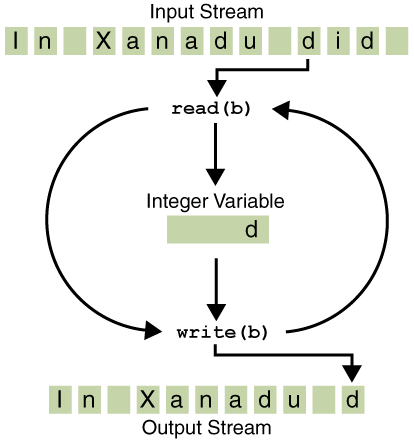

Programs use byte streams to perform input and output of 8-bit bytes. All byte stream classes are descended fromInputStreamandOutputStream.There are many byte stream classes. To demonstrate how byte streams work, we'll focus on the file I/O byte streams,
FileInputStreamandFileOutputStream. Other kinds of byte streams are used in much the same way; they differ mainly in the way they are constructed.Using Byte Streams
We'll exploreFileInputStreamandFileOutputStreamby examining an example program namedCopyBytes, which uses byte streams to copyxanadu.txt, one byte at a time.import java.io.FileInputStream; import java.io.FileOutputStream; import java.io.IOException; public class CopyBytes { public static void main(String[] args) throws IOException { FileInputStream in = null; FileOutputStream out = null; try { in = new FileInputStream("xanadu.txt"); out = new FileOutputStream("outagain.txt"); int c; while ((c = in.read()) != -1) { out.write(c); } } finally { if (in != null) { in.close(); } if (out != null) { out.close(); } } } }CopyBytesspends most of its time in a simple loop that reads the input stream and writes the output stream, one byte at a time, as shown in the following figure.Notice that 
Simple byte stream input and output.
read()returns anintvalue. If the input is a stream of bytes, why doesn'tread()return abytevalue? Using aintas a return type allowsread()to use -1 to indicate that it has reached the end of the stream.Always Close Streams
Closing a stream when it's no longer needed is very important — so important thatCopyBytesuses afinallyblock to guarantee that both streams will be closed even if an error occurs. This practice helps avoid serious resource leaks.One possible error is that
CopyByteswas unable to open one or both files. When that happens, the stream variable corresponding to the file never changes from its initialnullvalue. That's whyCopyBytesmakes sure that each stream variable contains an object reference before invokingclose.When Not to Use Byte Streams
CopyBytesseems like a normal program, but it actually represents a kind of low-level I/O that you should avoid. Sincexanadu.txtcontains character data, the best approach is to use character streams, as discussed in the next section. There are also streams for more complicated data types. Byte streams should only be used for the most primitive I/O.So why talk about byte streams? Because all other stream types are built on byte streams.